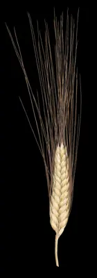

pranet · 出典付きの植物図鑑
durumvehnä
Triticum turgidum subsp. durum (Desf.) Husn. · Poaceae

説明：情報なし
異名: Gigachilon aethiopicum (Jakubz.) Á.Löve, Triticum abyssinicum (Vavilov) Vavilov, Triticum accessorium Flaksb., Triticum aethiopicum Jakubz., Triticum alatum Peterm., Triticum algeriense Desf. ex Mert. & W.D.J.Koch, Triticum bauhini Lag., Triticum brachystachyum Lag. ex Schult. & Schult.f., Triticum candidissimum Ard. ex Bayle-Bar., Triticum caucasicum Flaksb., Triticum cochleare Lag., Triticum densiusculum Flaksb., Triticum diversiflorum Steud., Triticum durum Desf., Triticum erinaceum Hornem., Triticum fastuosum Lag., Triticum hallerianum Mazzuc., Triticum hordeiforme Host, Triticum laxiusculum Flaksb., Triticum longisemineum Flaksb.
同定や利用は自己責任でお願いします。この図鑑だけを根拠に野生の植物を食べないでください。
出典
- 学名: World Flora Online Plant List 2026-06 · CC0 1.0
- 名前: Wikipedia の記事名と Wikidata · CC0 1.0（Wikidata）。記事名は事実
- 分布: World Checklist of Vascular Plants (WCVP), RBG Kew, version 2026-06-04 · CC BY 3.0
このページは pranet のデータから自動生成しています。コードは MIT、データは項目ごとのライセンス（説明）。